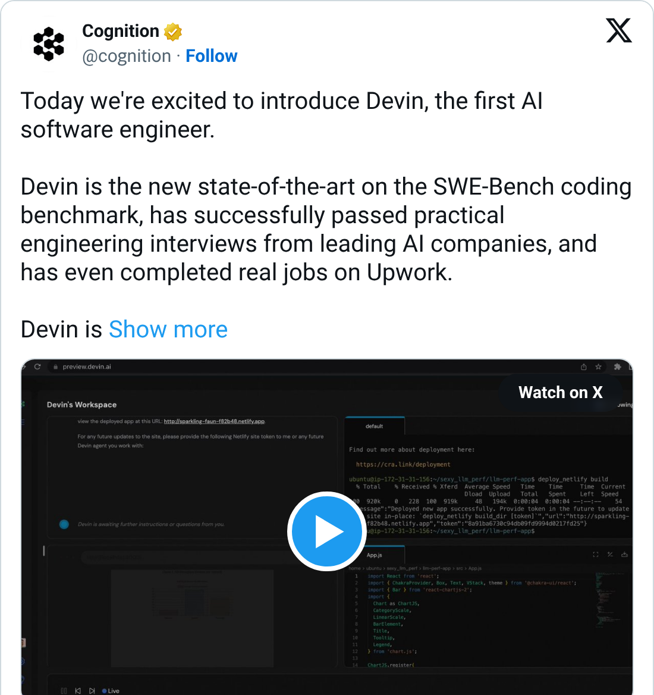
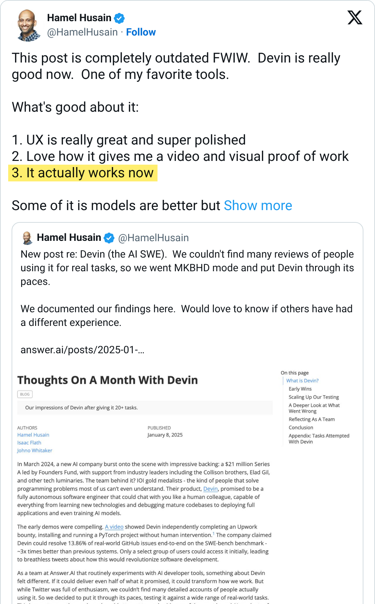
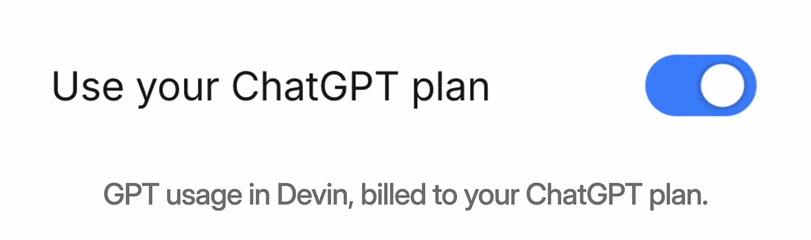
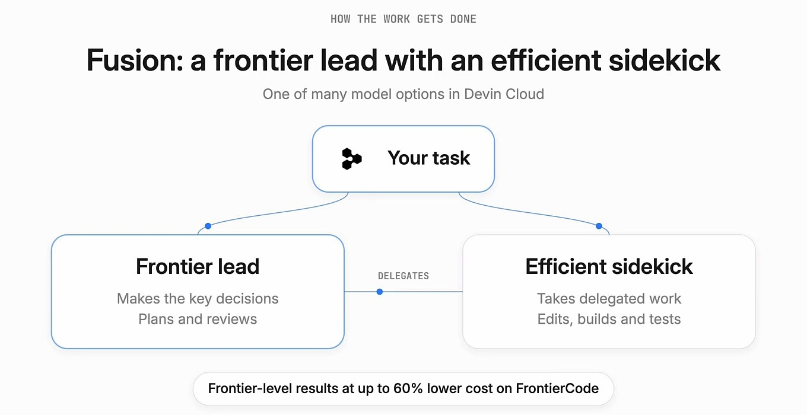
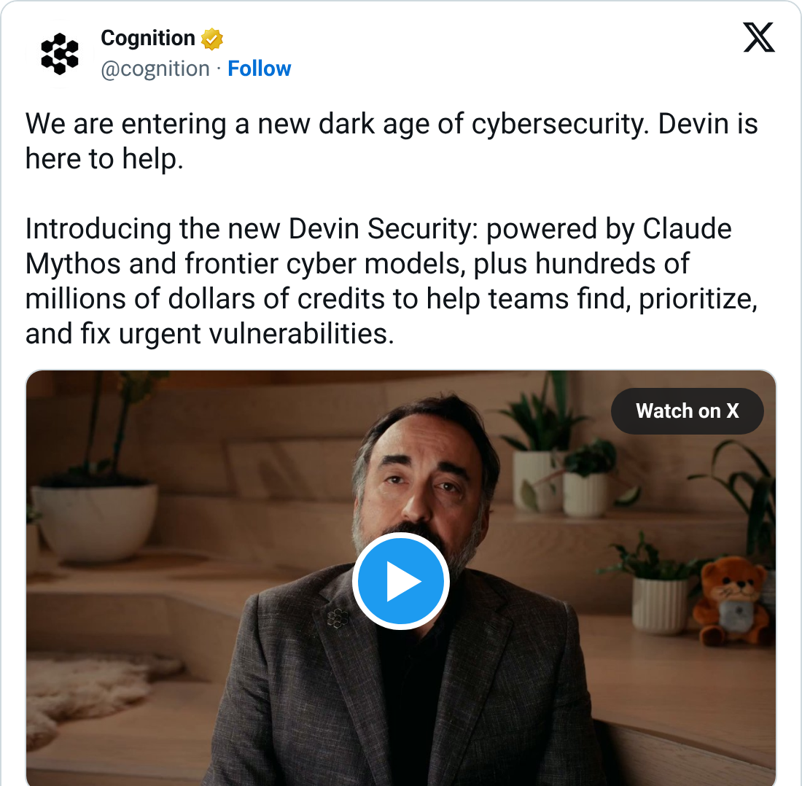
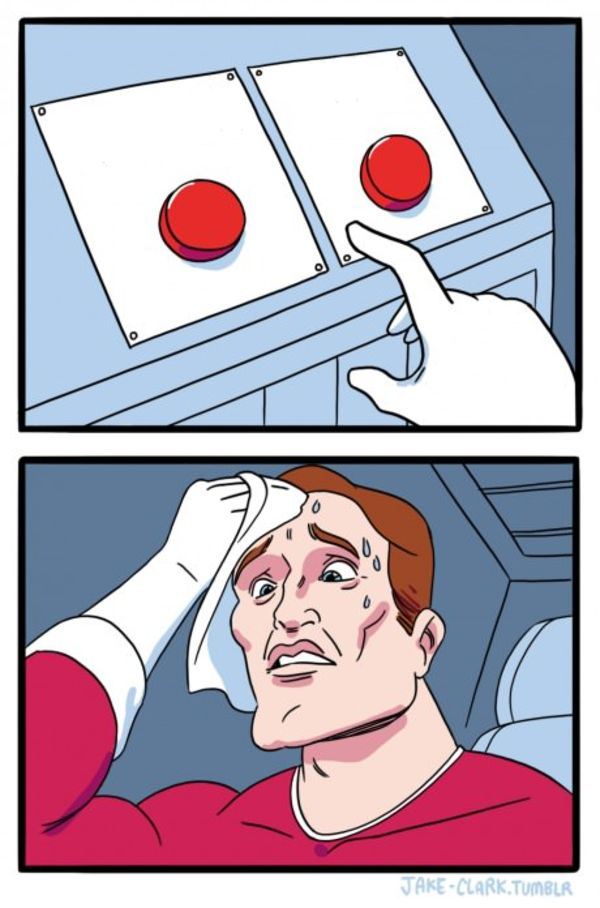

Devin AI Trento #1 · Devin è cambiato molto
Ciao, sono Bogdan
Roma / Romania / Trentino
minipim.io
gestire le informazioni di prodotto
TuttoCalcolato.it
calcolatori di ogni genere
Ogni giorno: Devin e Cursor / ambassador Devin a Trento

Devin AI Trento #1 · Impact Hub Trento · 4 novembre 202601 / 20
Perché sono qui
“Cercare occasioni per aiutare le persone, indipendentemente dal fatto che utilizzino Devin o meno, e aiutarle senza aspettarsi nulla in cambio.”
“Finding opportunities to help people regardless if they are using Devin or not, and help them without expecting anything in return.”
Linee guida ambassador Devin
Devin AI Trento #1 · Impact Hub Trento · 4 novembre 202602 / 20
Perché questa serata
19:10
Talk
19:35
Demo live
20:00
Q&A senza filtri
20:15
Lightning talk
20:35
Estrazione
20:40
Pizza e networking
Nessuno vi vende niente stasera.
20:35 estrazione live di 3 licenze Devin da 200 $
Devin AI Trento #1 · Impact Hub Trento · 4 novembre 202603 / 20
12 marzo 2024
“Il primo AI software engineer”
13,86%
su SWE-bench
il migliore prima: meno del 2% / su 100 bug, ne sistemava 14

Devin AI Trento #1 · Impact Hub Trento · 4 novembre 202604 / 20
500 dollari al mese e un test spietato
500 $/mese
dicembre 2024, per team
3 su 20
Answer.AI, gennaio 2025
3 successi · 14 fallimenti · 3 “boh”
3 successi · 14 fallimenti · 3 “boh”
14 task falliti su 20
500 $/mese
Devin AI Trento #1 · Impact Hub Trento · 4 novembre 202605 / 20
Hamel Husain, uno degli autori del test di Answer.AI
“It actually works now”
“Some of it is models are better but the UX/harness is also better.”
Quote-tweet del suo post di gennaio 2025

Devin AI Trento #1 · Impact Hub Trento · 4 novembre 202606 / 20
Chatbot, agente, harness
Chef
= LLM
+
Cucina
= harness
=
Agente
chef + cucina
Theo · t3.gg
@theo · 23 ott 2026 · “What is a ‘harness’?”
“An agent is what happens when you combine a harness and an LLM.”
io nel 2023
ChatGPT che mi scrive una funzione
Is this an agent?
Devin AI Trento #1 · Impact Hub Trento · 4 novembre 202607 / 20
PR e test end-to-end
Pull request
una proposta di modifica
Il bottone merge lo premete voi.
End-to-endpochi, grandi
Unit testtanti, piccoli
Non “fidati”, ma “guarda”.
Devin AI Trento #1 · Impact Hub Trento · 4 novembre 202608 / 20
E no, non è Windsurf. Però...
Codeium
Windsurf
Devin Desktop
Devin
Cloudagente nella sua macchina
DesktopIDE ex Windsurf
CLIagente nel terminale
Reviewcode review delle PR
Devin AI Trento #1 · Impact Hub Trento · 4 novembre 202609 / 20
Prezzi, allora vs oggi
| 2024 | Oggi (novembre 2026) | |
|---|---|---|
| Ingresso | 500 $/mese, solo team | Free, 0 $ (senza Devin Cloud) |
| Individuale | non esisteva | Pro 20 $ · Max 200 $ al mese |
| Team | 500 $/mese | Teams: da 80 $/mese, 40 $ a full seat |
| Come si misura | ACU | quota giornaliera e settimanale + crediti ACU e budget gerarchici solo Enterprise |
| Cosa consuma | ACU | azioni e macchina, non l'attesa dorme dopo 30 min di inattività |
500 $/mese solo per team
Free, poi 20 $/mese
Devin AI Trento #1 · Impact Hub Trento · 4 novembre 202610 / 20
da fine settembre 2026 · Settings > Connections
Lo chef lo portate da casa

ChatGPT Go, Plus o Pro
collegabile a Devin Pro, Max e Teams
Solo i modelli GPT
macchina, altri modelli e scansioni: quota Devin
Devin AI Trento #1 · Impact Hub Trento · 4 novembre 202611 / 20
Devin Fusion · dal 29 giu 2026
Fusion: chef capo e aiuto cuoco
Chef capomodello di frontiera: piano, decisioni, review finale
Aiuto cuocomodello economico (es. SWE-2): codice, build, test
fino a -60%
di costo su FrontierCode, a parità di risultati
(benchmark e dati di Cognition)
(benchmark e dati di Cognition)

Devin AI Trento #1 · Impact Hub Trento · 4 novembre 202612 / 20
Dove lavora Devin
Sessione
una VM Linux sua (o macOS, Windows): shell, editor, browser
Blueprint
un file YAML: cosa installare, come fare lint e test
Snapshot
l'immagine pronta da cui parte ogni sessione, rifatta ogni giorno
Devin Cloud
lavora da solo; dorme dopo 30 min, riprendibile per 14 giorni
Devin Desktop
ex Windsurf: tabellone degli agenti + Devin Local
Devin CLI
agente nel terminale; /handoff spedisce il lavoro al cloud
Test con video
apre l'app, la usa come un utente, ti manda il video
Devin AI Trento #1 · Impact Hub Trento · 4 novembre 202613 / 20
DeepWiki e Ask Devin: prima capire
Come nasce
indicizza il repo e scrive una wiki: pagine per modulo e diagrammi
Cosa ti dà
ogni pagina cita file e righe da cui viene, e il commit indicizzato
Come la uso
Ask Devin: domande con citazioni → piano → sessione pronta
Quanto costa
repo pubblici: deepwiki.com e il suo MCP, gratis
repo privati: con un account Devin, livello base incluso
repo privati: con un account Devin, livello base incluso
Devin AI Trento #1 · Impact Hub Trento · 4 novembre 202614 / 20
La cassetta degli attrezzi
Devin Review
legge ogni PR: bug per confidenza, sicurezza sempre attiva
Auto-Fix
i problemi trovati tornano nella PR come correzioni
Skills
SKILL.md nel repo: procedure ripetibili. Assorbono Playbooks e Knowledge
AGENTS.md
le regole del repo, lette a ogni setup
Memoria
note personali tra sessioni, riordinate ogni giorno
MCP
collega Datadog, Sentry, database, ticket
Automations
trigger (Slack, GitHub, orario, webhook) → sessione
Oncall
da ottobre per tutti: alert → indagine → fix
Data Analyst
SQL e grafici sui dati collegati, anche da Slack
API e Devin MCP
Devin da script e da altri agenti
Devin AI Trento #1 · Impact Hub Trento · 4 novembre 202615 / 20
26 ott 2026 · Devin Security 2.0
“A new dark age of cybersecurity”
- Scansionacon modelli cyber di frontiera, anche Claude Mythos
- Dà prioritàcon un threat model del vostro ambiente
- Correggeuna sessione per finding, una PR da rivedere
Importa i finding di altri scanner / crediti gratuiti per le enterprise

Devin AI Trento #1 · Impact Hub Trento · 4 novembre 202616 / 20
Quello che resta vero
- Sbaglia.review e branch protetti
- Compiti vaghi, risultati vaghi.meno di 3 ore per te: ok. Oltre, spezzalo.
- Costa.modello, dimensione del task, ragionamento
- Privacy.Data Controls, prima del codice del cliente

Faccio review della PR Faccio merge, tanto ha fatto i test Ogni dev alle 18:59 di venerdìDevin AI Trento #1 · Impact Hub Trento · 4 novembre 202617 / 20
Come la racconta Cognition
Cognition
@cognition · 28 ott 2026 · su Mercor
“Mercor's engineers move at extraordinary speed. They give Devin long-running tasks before bed, during meetings, or on their way to the gym. They come back to tested features and PRs ready to merge.”
Marketing loro, su un cliente loro. Però si può verificare.
Devin AI Trento #1 · Impact Hub Trento · 4 novembre 202618 / 20
Demo live
Cosa stiamo per vedere
Cosa
un caso reale, non un'app di esempio
Dove
Devin Cloud: una sessione vera e la sua PR
Come
dal vivo, anche se qualcosa si rompe
Come pianifica / come lavora / come verifica
Devin AI Trento #1 · Impact Hub Trento · 4 novembre 202619 / 20
QR estrazione
(da inserire)assets/qr-estrazione.png
(da inserire)assets/qr-estrazione.png

Scansiona e partecipa
[URL breve da inserire]
Estrazione alle 20:35.
Devi essere in sala.
Devi essere in sala.
3 licenze Devin da 200 $
Devin AI Trento #1 · Impact Hub Trento · 4 novembre 2026Q
3 licenze Devin da 200 $
Devin AI Trento #1 · Impact Hub Trento · 4 novembre 202620 / 20